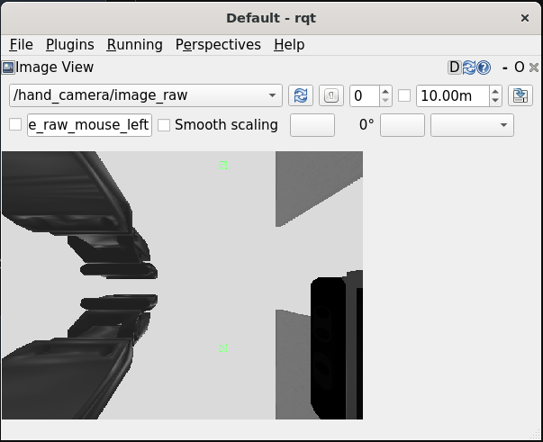
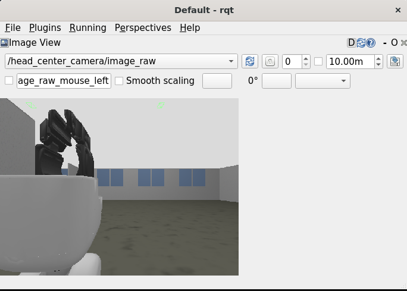
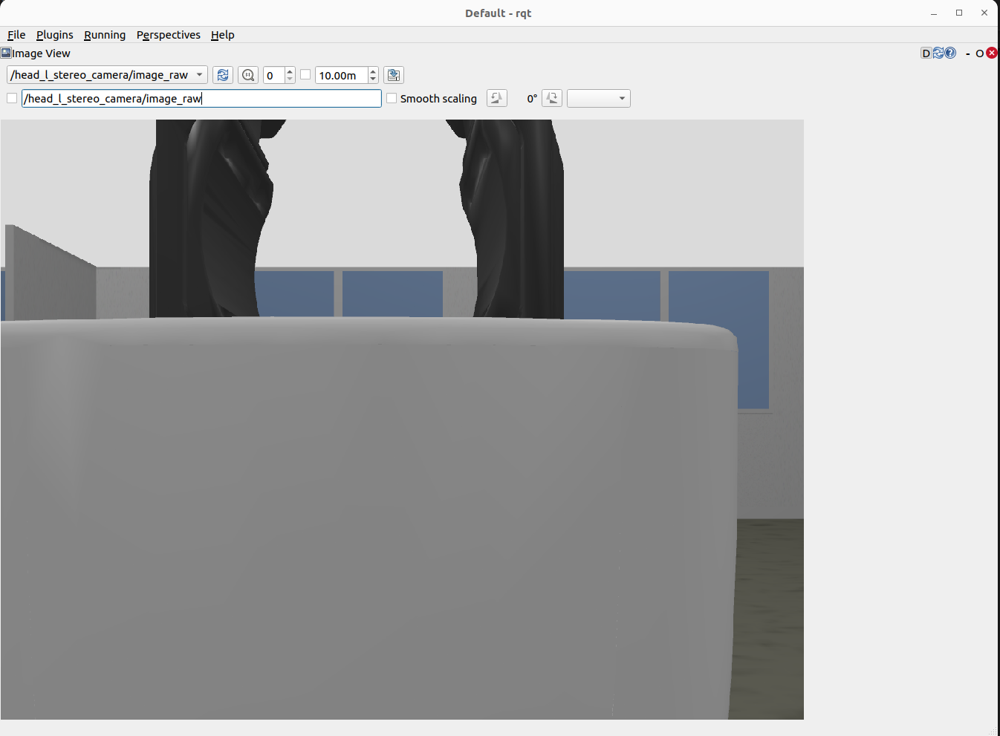
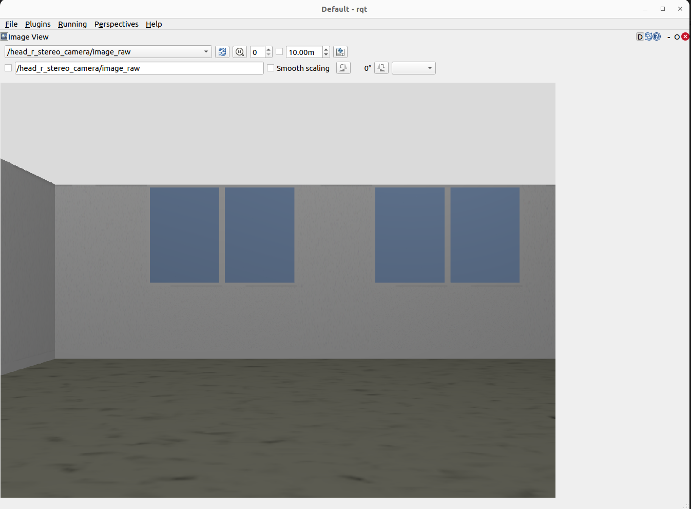
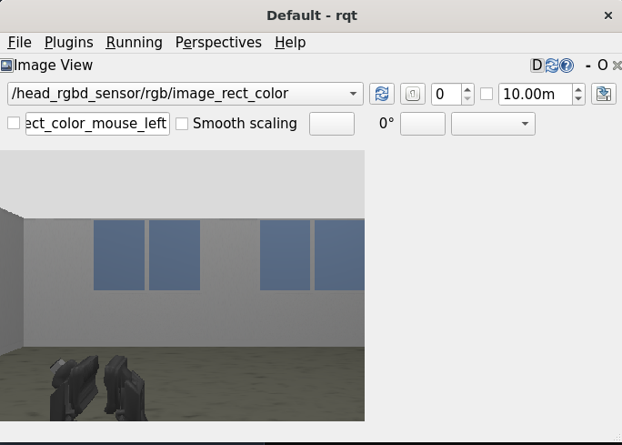
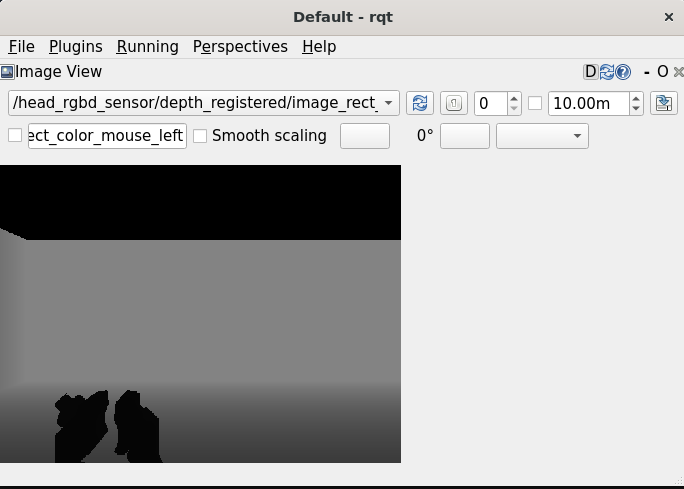

8.1.2. ROSコマンド・ツール#
8.1.2.1. 頭部関節制御#
actionで頭部関節を以下に制御する
Joint名
指令値
head_pan_joint1.0[rad]
head_tilt_joint0.5[rad]
$ ros2 action send_goal /head_trajectory_controller/follow_joint_trajectory control_msgs/action/FollowJointTrajectory "{trajectory: {joint_names: ["head_pan_joint", "head_tilt_joint"], points: [{positions: [1.0, 0.5], time_from_start: {sec: 2.0}}]}}"
publishされている頭部のコントローラの現在状態を取得する
$ ros2 topic echo /head_trajectory_controller/controller_state header: stamp: sec: 1647835540 nanosec: 104428359 frame_id: '' joint_names: - head_tilt_joint - head_pan_joint desired: positions: - 0.5 - 1.0 velocities: - 0.0 - 0.0 accelerations: - 0.0 - 0.0 effort: [] time_from_start: sec: 0 nanosec: 0 actual: positions: - 0.5002282179067921 - 0.9999919034998204 velocities: [] accelerations: [] effort: [] time_from_start: sec: 0 nanosec: 0 error: positions: - -0.0002282179067920609 - 8.096500179632926e-06 velocities: [] accelerations: [] effort: [] time_from_start: sec: 0 nanosec: 0
目標軌道を設定するsubscriberに対して以下の指令を出す
Joint名
指令値
head_pan_joint0.5[rad]
head_tilt_joint1.0[rad]
$ ros2 topic pub --once /head_trajectory_controller/joint_trajectory trajectory_msgs/msg/JointTrajectory "{joint_names: ["head_pan_joint", "head_tilt_joint"], points: [{positions: [0.5, 1.0], time_from_start: {sec: 3.0}}]}"
8.1.2.2. 腕部関節制御#
actionで腕部関節を以下に制御する
Joint名
指令値
arm_flex_joint0.0[rad]
arm_lift_joint0.2[m]
arm_roll_joint-1.57[rad]
wrist_flex_joint-1.57[rad]
wrist_roll_joint0.0[rad]
$ ros2 action send_goal /arm_trajectory_controller/follow_joint_trajectory control_msgs/action/FollowJointTrajectory "{trajectory: {joint_names: ["arm_flex_joint", "arm_lift_joint", "arm_roll_joint", "wrist_flex_joint", "wrist_roll_joint"], points: [{positions: [0.0, 0.2, -1.57, -1.57, 0.0], time_from_start: {sec: 5.0}}]}}"
publishされている腕部のコントローラの現在状態を取得する
$ ros2 topic echo /arm_trajectory_controller/controller_state header: stamp: sec: 1647835459 nanosec: 69912926 frame_id: '' joint_names: - arm_lift_joint - arm_flex_joint - arm_roll_joint - wrist_flex_joint - wrist_roll_joint desired: positions: - 0.2 - 0.0 - -1.57 - -1.57 - 0.0 velocities: - 0.0 - 0.0 - 0.0 - 0.0 - 0.0 accelerations: - 0.0 - 0.0 - 0.0 - 0.0 - 0.0 effort: [] time_from_start: sec: 0 nanosec: 0 actual: positions: - 0.19970873540096648 - -1.9862772813183938e-06 - -1.5700972685438084 - -1.5695222863478908 - 1.4550485046171957e-05 velocities: [] accelerations: [] effort: [] time_from_start: sec: 0 nanosec: 0 error: positions: - 0.0002912645990336138 - 1.9862772813183938e-06 - 9.72685438083154e-05 - -0.00047771365210902417 - -1.4550485046171957e-05 velocities: [] accelerations: [] effort: [] time_from_start: sec: 0 nanosec: 0
目標軌道を設定するsubscriberに対して以下の指令を出す
Joint名
指令値
arm_flex_joint0.0[rad]
arm_lift_joint0.0[m]
arm_roll_joint-1.57[rad]
wrist_flex_joint-1.57[rad]
wrist_roll_joint0.0[rad]
$ ros2 topic pub --once /arm_trajectory_controller/joint_trajectory trajectory_msgs/msg/JointTrajectory "{joint_names: ["arm_flex_joint", "arm_lift_joint", "arm_roll_joint", "wrist_flex_joint", "wrist_roll_joint"], points: [{positions: [0.0, 0.0, -1.57, -1.57, 0.0], time_from_start: {sec: 3.0}}]}"
8.1.2.3. ハンド制御#
actionでハンドを以下に制御する
Joint名
指令値
hand_motor_joint1.0[rad]
$ ros2 action send_goal /gripper_controller/follow_joint_trajectory control_msgs/action/FollowJointTrajectory "{trajectory: {joint_names: ["hand_motor_joint"], points: [{positions: [1.0], time_from_start: {sec: 2.0}}]}}"
actionで指先間距離を指定してグリッパを制御する
$ ros2 action send_goal /gripper_controller/set_distance tmc_control_msgs/action/GripperSetDistance "{distance: 0.05}"
actionで指先間距離の軌道を指定してグリッパを制御する
$ ros2 action send_goal /gripper_controller/follow_distance_trajectory control_msgs/action/FollowJointTrajectory "{trajectory: {joint_names: ["hand_motor_joint"], points: [{positions: [0.05], time_from_start: {sec: 5}}]}}"
actionで指定した力(1.0[N])で握りこむ
$ ros2 action send_goal /gripper_controller/grasp tmc_control_msgs/action/GripperApplyEffort "{effort: -1.0}"
actionで指定した力(1.0[N])で把持する
$ ros2 action send_goal /gripper_controller/apply_force tmc_control_msgs/action/GripperApplyEffort "{effort: 1.0}"
目標軌道を設定するsubscriberに対して以下の指令を出す
Joint名
指令値
hand_motor_joint1.0[rad]
$ ros2 topic pub --once /gripper_controller/joint_trajectory trajectory_msgs/msg/JointTrajectory "{joint_names: ["hand_motor_joint"], points: [{positions: [1.0], time_from_start: {sec: 3.0}}]}"
指先間距離を設定するsubscriberに対して以下の指令を出す
指令値
0.05[m]
$ ros2 topic pub --once /gripper_controller/command_distance std_msgs/msg/Float32 "{data: 0.05}"
指先間距離の目標軌道を設定するsubscriberに対して以下の指令を出す
Joint名
指令値
hand_motor_joint0.05[m]
$ ros2 topic pub --once /gripper_controller/distance_trajectory trajectory_msgs/msg/JointTrajectory "{joint_names: ['hand_motor_joint'], points: [{positions: [0.05], time_from_start: {sec: 5}}]}"
8.1.2.4. 台車制御#
actionで以下の台車軌道再生を行う
Joint名
指令値
odom_x0.5[m]
odom_y0.0[m]
odom_t0.0[rad]
$ ros2 action send_goal /omni_base_controller/follow_joint_trajectory control_msgs/action/FollowJointTrajectory "{trajectory: {joint_names: ["odom_x", "odom_y", "odom_t"], points: [{positions: [0.5, 0.0, 0.0], time_from_start: {sec: 3.0}}]}}"
publishされている台車コントローラの現在状態を取得する
$ ros2 topic echo /omni_base_controller/state header: stamp: sec: 1647836100 nanosec: 780639190 frame_id: '' joint_names: - odom_x - odom_y - odom_t desired: positions: [] velocities: [] accelerations: [] effort: [] time_from_start: sec: 0 nanosec: 0 actual: positions: - 0.0 - 0.0 - 0.0 velocities: - -0.0010223520662738157 - 6.758229886193314e-05 - -0.2545051782656925 accelerations: [] effort: [] time_from_start: sec: 0 nanosec: 0 error: positions: [] velocities: [] accelerations: [] effort: [] time_from_start: sec: 0 nanosec: 0
publishされているロボット起動時からのホイールオドメトリを取得する
$ ros2 topic echo /omni_base_controller/wheel_odom header: stamp: sec: 1647836473 nanosec: 646157354 frame_id: odom child_frame_id: base_footprint_wheel pose: pose: position: x: -9.0851020155767 y: -5.075906977696168 z: 0.0 orientation: x: -0.0 y: -0.0 z: -0.5359724394722091 w: 0.8442354790733502 covariance: - 0.0 - 0.0 - 0.0 - 0.0 - 0.0 - 0.0 - 0.0 - 0.0 - 0.0 - 0.0 - 0.0 - 0.0 - 0.0 - 0.0 - 0.0 - 0.0 - 0.0 - 0.0 - 0.0 - 0.0 - 0.0 - 0.0 - 0.0 - 0.0 - 0.0 - 0.0 - 0.0 - 0.0 - 0.0 - 0.0 - 0.0 - 0.0 - 0.0 - 0.0 - 0.0 - 0.0 twist: twist: linear: x: -0.0010379325663322169 y: 6.24562721239427e-05 z: 0.0 angular: x: 0.0 y: 0.0 z: -0.24736113963905038 covariance: - 0.0 - 0.0 - 0.0 - 0.0 - 0.0 - 0.0 - 0.0 - 0.0 - 0.0 - 0.0 - 0.0 - 0.0 - 0.0 - 0.0 - 0.0 - 0.0 - 0.0 - 0.0 - 0.0 - 0.0 - 0.0 - 0.0 - 0.0 - 0.0 - 0.0 - 0.0 - 0.0 - 0.0 - 0.0 - 0.0 - 0.0 - 0.0 - 0.0 - 0.0 - 0.0 - 0.0
目標速度を設定するsubscriberに対して指令を出す
$ ros2 topic pub --once /omni_base_controller/cmd_vel geometry_msgs/msg/Twist "{linear: {x: 1.0, y: 0.0, z: 0.0}, angular: {x: 0.0, y: 0.0, z: 0.0}}"
8.1.2.5. 手先カメラ#
publishされているカメラ情報を取得する
$ ros2 topic echo /hand_camera/camera_info header: stamp: sec: 10068 nanosec: 857000000 frame_id: hand_camera_frame height: 480 width: 640 distortion_model: plumb_bob d: - 0.0 - 0.0 - 0.0 - 0.0 - 0.0 k: - 205.46963709898583 - 0.0 - 320.5 - 0.0 - 205.46963709898583 - 240.5 - 0.0 - 0.0 - 1.0 r: - 1.0 - 0.0 - 0.0 - 0.0 - 1.0 - 0.0 - 0.0 - 0.0 - 1.0 p: - 205.46963709898583 - 0.0 - 320.5 - -14.382874596929009 - 0.0 - 205.46963709898583 - 240.5 - 0.0 - 0.0 - 0.0 - 1.0 - 0.0 binning_x: 0 binning_y: 0 roi: x_offset: 0 y_offset: 0 height: 0 width: 0 do_rectify: false
publishされているカメラ画像をrqtで表示する
rqtが起動したら、「Plugins」→「Visualization」→「Image View」の順に選択し、トピック名から「/hand_camera/image_raw」を選択する
$ rqt
{kind=link}
8.1.2.6. 頭部広角カメラ#
注釈
HSRBでのみ利用可能です。
publishされているカメラ情報を取得する
$ ros2 topic echo /head_center_camera/camera_info header: stamp: sec: 10068 nanosec: 857000000 frame_id: head_center_camera_frame height: 480 width: 640 distortion_model: plumb_bob d: - 0.0 - 0.0 - 0.0 - 0.0 - 0.0 k: - 205.46963709898583 - 0.0 - 320.5 - 0.0 - 205.46963709898583 - 240.5 - 0.0 - 0.0 - 1.0 r: - 1.0 - 0.0 - 0.0 - 0.0 - 1.0 - 0.0 - 0.0 - 0.0 - 1.0 p: - 205.46963709898583 - 0.0 - 320.5 - -14.382874596929009 - 0.0 - 205.46963709898583 - 240.5 - 0.0 - 0.0 - 0.0 - 1.0 - 0.0 binning_x: 0 binning_y: 0 roi: x_offset: 0 y_offset: 0 height: 0 width: 0 do_rectify: false
publishされているカメラ画像をrqtで表示する
rqtが起動したら、「Plugins」→「Visualization」→「Image View」の順に選択し、トピック名から「/head_center_camera/image_raw」を選択する
$ rqt
{kind=link}
8.1.2.7. 頭部ステレオカメラ（左）#
publishされているカメラ情報を取得する
$ ros2 topic echo /head_l_stereo_camera/camera_info header: stamp: sec: 10286 nanosec: 189000000 frame_id: head_l_stereo_camera_frame height: 960 width: 1280 distortion_model: plumb_bob d: - 0.0 - 0.0 - 0.0 - 0.0 - 0.0 k: - 968.7653251755174 - 0.0 - 640.5 - 0.0 - 968.7653251755174 - 480.5 - 0.0 - 0.0 - 1.0 r: - 1.0 - 0.0 - 0.0 - 0.0 - 1.0 - 0.0 - 0.0 - 0.0 - 1.0 p: - 968.7653251755174 - 0.0 - 640.5 - -0.0 - 0.0 - 968.7653251755174 - 480.5 - 0.0 - 0.0 - 0.0 - 1.0 - 0.0 binning_x: 0 binning_y: 0 roi: x_offset: 0 y_offset: 0 height: 0 width: 0 do_rectify: false
publishされているカメラ画像をrqtで表示する
rqtが起動したら、「Plugins」→「Visualization」→「Image View」の順に選択し、トピック名から「/head_l_stereo_camera/image_raw」を選択する
$ rqt
{kind=link}
8.1.2.8. 頭部ステレオカメラ（右）#
publishされているカメラ情報を取得する
$ ros2 topic echo /head_r_stereo_camera/camera_info header: stamp: sec: 10286 nanosec: 189000000 frame_id: head_r_stereo_camera_frame height: 960 width: 1280 distortion_model: plumb_bob d: - 0.0 - 0.0 - 0.0 - 0.0 - 0.0 k: - 968.7653251755174 - 0.0 - 640.5 - 0.0 - 968.7653251755174 - 480.5 - 0.0 - 0.0 - 1.0 r: - 1.0 - 0.0 - 0.0 - 0.0 - 1.0 - 0.0 - 0.0 - 0.0 - 1.0 p: - 968.7653251755174 - 0.0 - 640.5 - -0.0 - 0.0 - 968.7653251755174 - 480.5 - 0.0 - 0.0 - 0.0 - 1.0 - 0.0 binning_x: 0 binning_y: 0 roi: x_offset: 0 y_offset: 0 height: 0 width: 0 do_rectify: false
publishされているカメラ画像をrqtで表示する
rqtが起動したら、「Plugins」→「Visualization」→「Image View」の順に選択し、トピック名から「/head_r_stereo_camera/image_raw」を選択する
$ rqt
{kind=link}
8.1.2.9. 頭部3次元距離センサ#
publishされているカメラ情報(rgb)を取得する
$ ros2 topic echo /head_rgbd_sensor/rgb/camera_info header: stamp: sec: 10464 nanosec: 510000000 frame_id: head_rgbd_sensor_rgb_frame height: 480 width: 640 distortion_model: plumb_bob d: - 0.0 - 0.0 - 0.0 - 0.0 - 0.0 k: - 554.3827128226441 - 0.0 - 0.0 - 0.0 - 554.3827128226441 - 0.0 - 0.0 - 0.0 - 1.0 r: - 1.0 - 0.0 - 0.0 - 0.0 - 1.0 - 0.0 - 0.0 - 0.0 - 1.0 p: - 554.3827128226441 - 0.0 - 0.0 - -0.0 - 0.0 - 554.3827128226441 - 0.0 - 0.0 - 0.0 - 0.0 - 1.0 - 0.0 binning_x: 0 binning_y: 0 roi: x_offset: 0 y_offset: 0 height: 0 width: 0 do_rectify: false
publishされているセンサ画像をrqtで表示する
rqtが起動したら、「Plugins」→「Visualization」→「Image View」の順に選択し、トピック名から「/head_rgbd_sensor/rgb/image_rect_color」を選択する
$ rqt
publishされているカメラ情報(depth)を取得する
$ ros2 topic echo /head_rgbd_sensor/depth_registered/camera_info header: stamp: sec: 10464 nanosec: 510000000 frame_id: head_rgbd_sensor_rgb_frame height: 480 width: 640 distortion_model: plumb_bob d: - 0.0 - 0.0 - 0.0 - 0.0 - 0.0 k: - 554.3827128226441 - 0.0 - 0.0 - 0.0 - 554.3827128226441 - 0.0 - 0.0 - 0.0 - 1.0 r: - 1.0 - 0.0 - 0.0 - 0.0 - 1.0 - 0.0 - 0.0 - 0.0 - 1.0 p: - 554.3827128226441 - 0.0 - 0.0 - -0.0 - 0.0 - 554.3827128226441 - 0.0 - 0.0 - 0.0 - 0.0 - 1.0 - 0.0 binning_x: 0 binning_y: 0 roi: x_offset: 0 y_offset: 0 height: 0 width: 0 do_rectify: false
publishされているセンサ画像をrqtで表示する
rqtが起動したら、「Plugins」→「Visualization」→「Image View」の順に選択し、トピック名から「/head_rgbd_sensor/depth_registered/image_rect_raw」を選択する
$ rqt
{kind=link}
{kind=link}
8.1.2.10. レーザースキャナー#
publishされているレーザースキャナーの出力を取得する
$ ros2 topic echo --no-arr /scan header: stamp: sec: 11092 nanosec: 205000000 frame_id: base_range_sensor_link angle_min: -2.0999999046325684 angle_max: 2.0999999046325684 angle_increment: 0.005833333358168602 time_increment: 0.0 scan_time: 0.0 range_min: 0.05000000074505806 range_max: 60.0 ranges: '<sequence type: float, length: 721>' intensities: '<sequence type: float, length: 721>'
8.1.2.11. 6軸力覚センサー#
publishされている力覚センサの出力を取得する
$ ros2 topic echo /wrist_wrench/raw header: stamp: sec: 11271 nanosec: 366000000 frame_id: wrist_ft_sensor_frame wrench: force: x: -34.62322695566456 y: -0.14540779690636907 z: -1.8011436005398451 torque: x: 0.030794509482329233 y: -2.105840487050739 z: -0.018643797444077546
8.1.2.12. 関節状態#
publishされている各関節の現在状態を取得する
$ ros2 topic echo /joint_states header: stamp: sec: 1647839284 nanosec: 624605014 frame_id: '' name: - arm_flex_joint - arm_lift_joint - arm_roll_joint - base_l_drive_wheel_joint - base_roll_joint - base_r_drive_wheel_joint - head_pan_joint - wrist_flex_joint - head_tilt_joint - wrist_roll_joint position: - -2.8903283935122204e-06 - 0.19972439991014018 - -1.5700229673346995 - 181.4944573276328 - 3.141743624263463 - 204.7184796245906 - 0.9999903535217216 - -1.5695753709525095 - 0.5002338911119635 - 2.3949704772263658e-05 velocity: - -0.0009215255691328098 - -0.27647109041567 - -0.022944800640008145 - 0.028210998586525215 - 0.24622042188149748 - 0.02374781245119207 - -0.009186018402255636 - 0.4246389928247181 - 0.23367769165418287 - 0.023994581529605992 effort: - 0.0 - 0.0 - 0.0 - 0.0 - 0.0 - 0.0 - 0.0 - 0.0 - 0.0 - 0.0
8.1.2.13. ControllerManager制御#
ロード可能なコントローラを取得する
$ ros2 service call /controller_manager/list_controller_types controller_manager_msgs/srv/ListControllerTypes requester: making request: controller_manager_msgs.srv.ListControllerTypes_Request() response: controller_manager_msgs.srv.ListControllerTypes_Response(types=['controller_manager/test_controller', 'controller_manager/test_controller_failed_init', 'controller_manager/test_controller_with_interfaces', 'diff_drive_controller/DiffDriveController', 'effort_controllers/JointGroupEffortController', 'force_torque_sensor_broadcaster/ForceTorqueSensorBroadcaster', 'forward_command_controller/ForwardCommandController', 'hsrb_base_controllers/OmniBaseController', 'imu_sensor_broadcaster/IMUSensorBroadcaster', 'joint_state_broadcaster/JointStateBroadcaster', 'joint_state_controller/JointStateController', 'joint_trajectory_controller/JointTrajectoryController', 'position_controllers/JointGroupPositionController', 'tmc_ros2_controllers/ExxxDriveModeBroadcaster', 'tmc_ros2_controllers/ExxxDriveModeController', 'velocity_controllers/JointGroupVelocityController'], base_classes=['controller_interface::ControllerInterface', 'controller_interface::ControllerInterface', 'controller_interface::ControllerInterface', 'controller_interface::ControllerInterface', 'controller_interface::ControllerInterface', 'controller_interface::ControllerInterface', 'controller_interface::ControllerInterface', 'controller_interface::ControllerInterface', 'controller_interface::ControllerInterface', 'controller_interface::ControllerInterface', 'controller_interface::ControllerInterface', 'controller_interface::ControllerInterface', 'controller_interface::ControllerInterface', 'controller_interface::ControllerInterface', 'controller_interface::ControllerInterface', 'controller_interface::ControllerInterface'])
現在ロードされているコントローラを取得する
$ ros2 service call /controller_manager/list_controllers controller_manager_msgs/srv/ListControllers requester: making request: controller_manager_msgs.srv.ListControllers_Request() response: controller_manager_msgs.srv.ListControllers_Response(controller=[controller_manager_msgs.msg.ControllerState(name='joint_state_controller', state='active', type='joint_state_controller/JointStateController', claimed_interfaces=[]), controller_manager_msgs.msg.ControllerState(name='head_trajectory_controller', state='active', type='joint_trajectory_controller/JointTrajectoryController', claimed_interfaces=['head_tilt_joint/position', 'head_pan_joint/position']), controller_manager_msgs.msg.ControllerState(name='arm_trajectory_controller', state='active', type='joint_trajectory_controller/JointTrajectoryController', claimed_interfaces=['arm_lift_joint/position', 'arm_flex_joint/position', 'arm_roll_joint/position', 'wrist_flex_joint/position', 'wrist_roll_joint/position']), controller_manager_msgs.msg.ControllerState(name='omni_base_controller', state='active', type='hsrb_base_controllers/OmniBaseController', claimed_interfaces=['base_roll_joint/position', 'base_r_drive_wheel_joint/velocity', 'base_l_drive_wheel_joint/velocity'])])